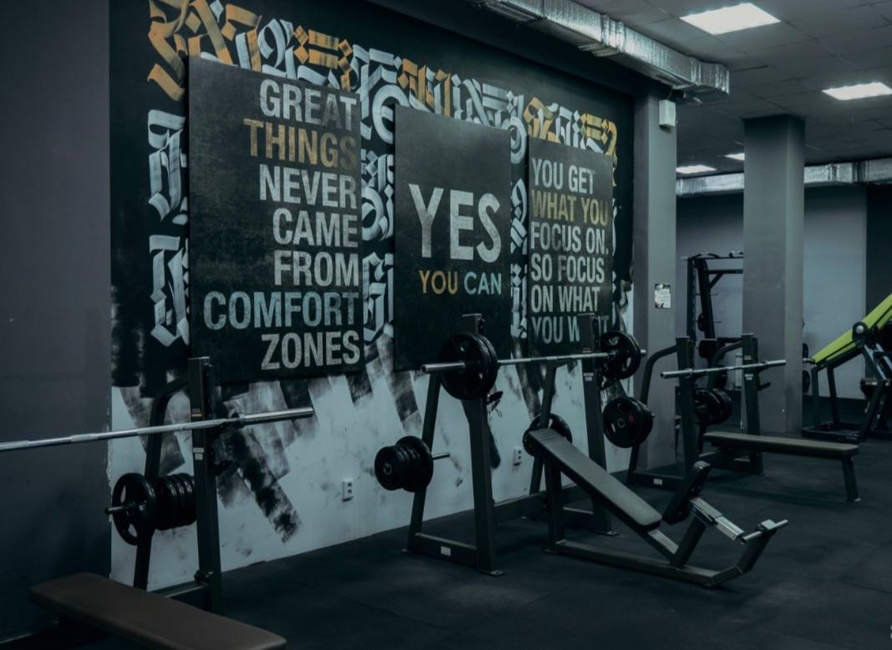
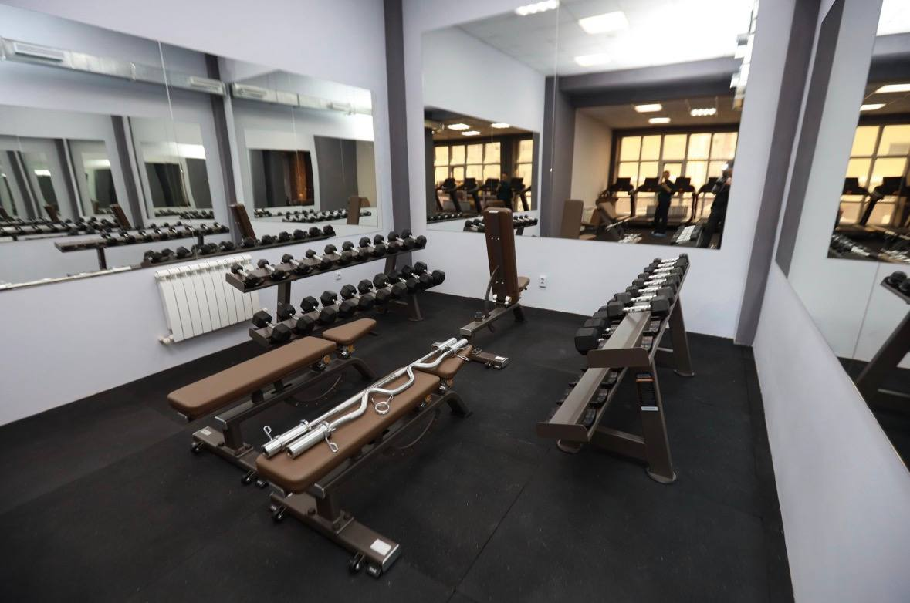

Our Training Equipment
We provide heavy-duty, professional-grade machinery and free weights designed for powerlifting, bodybuilding, and intense strength conditioning.
Free Weights Zone
Our gym features heavy-duty power racks, olympic barbells, calibrated plates, and dumbbells up to 60 kg.

Selectorized & Plate-Loaded Machines
Target specific muscle groups with precision cable platforms, leg presses, chest presses, and lat pull-down stations.

Cardio & Conditioning
High-capacity treadmills, assault bikes, and rowing machines built for endurance and high-intensity interval training (HIIT).
